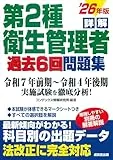
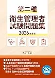

第二種衛生管理者のおすすめ問題集3選【過去問・予想模試2026】
第二種衛生管理者試験は全30問·180分·3科目で、総合180点以上かつ各科目40点以上が合格ラインです。13:30開始の本番形式に慣れるには、過去問·予想問題の通し演習量が得点安定の鍵になります。本記事では2026年度版の問題集3冊を、収録形式·解説量·独学との相性で比較します。価格·在庫は購入前に各Amazon販売ページで必ず確認してください。
この記事の信頼性について
| 執筆 | 二衛マスター編集部（資格学習サイトの編集チーム） |
|---|---|
| 確認 | 公式情報確認担当（公開前に一次情報との照合を行う担当者） |
| 事実確認日 | 2026-06-18 |
| 主な参照元 |
1問題集選びの3つの基準（30問·各40点）
- 30問本番形式（13:30開始·180分）に近いか
- 解説で復習できるか
- 週次計画に見合う演習量があるかを確認します
各科目40点の足切り対策には、科目別に解ける構成か、解説で弱点科目に戻れるかが重要です。
| 基準 | 確認内容 |
|---|---|
| 形式 | 30問·3科目（法令·衛生·生理） |
| 解説 | 誤答後に該当論点へ戻れるか |
| 演習量 | 週1回30問が何週続くか |
| 足切り | 3科目別得点を毎回記録できるか |
テキスト第1周完了後（目安4〜6週）に週1回30問をカレンダー登録し、問題集1冊をメイン演習に据える計画が定番です。合格基準の2条件は 第二種衛生管理者試験の合格基準と足切り で確認してください。
おすすめ問題集3選（比較）
価格・在庫は執筆時点（2026-06-12）のAmazon税込参考です。購入前に販売ページで最新版を確認してください。
| 順位 | 商品名 | 価格（税込参考） | ページ数 | 向いている人 |
|---|---|---|---|---|
| 1 | 2026年版 ユーキャンの第2種衛生管理者 重要過去問&予想模試 | ¥1,760 | 288 | 予想模試付きで演習量を一気に確保したい人 |
| 2 | 詳解 第2種衛生管理者過去6回問題集 '26年版 | ¥1,540 | 256 | 直近の本試験形式で解きたい人 |
| 3 | 第二種衛生管理者試験問題集 2026年度版 | ¥2,200 | 224 | 試験実施団体系の問題形式に慣れたい人 |

2026年版 ユーキャンの第2種衛生管理者 重要過去問&予想模試
- 重要過去問と予想模試を1冊で回しやすい
- ユーキャン系列で速習・要点整理との併用がしやすい
- 直前期の総仕上げにも使える

詳解 第2種衛生管理者過去6回問題集 '26年版
- 過去6回分を解説付きで収録
- 本試験に近い形式で時間配分の練習に向く
- 成美堂の問題集ラインで他教材と組み合わせやすい

第二種衛生管理者試験問題集 2026年度版
- 労基団連発行で試験形式に近い演習ができる
- 科目別の演習量確保に向く
- 他社問題集との使い分けで弱点補強しやすい
23冊の比較の見方（価格·タイプ）
比較では「予想模試まで含めて演習量を確保」「直近の本試験形式を解く」「試験実施団体系の形式に慣れる」の3タイプで見ます。いずれも第二種専用（30問·3科目）であることを表紙で確認してから選んでください。執筆時点（2026-06-18）のAmazon税込参考です。
| 順位 | タイプ | 価格参考 | ページ |
|---|---|---|---|
| 1位 | 過去問＋予想模試 | 1,760円 | 288頁 |
| 2位 | 過去6回解説付き | 1,540円 | 256頁 |
| 3位 | 実施団体系 | 2,200円 | 224頁 |
3冊を同時に開くより、フェーズごとに1冊に役割を絞ると計画が立てやすくなります。テキスト未読の論点が多い場合は、先に 第二種衛生管理者のおすすめ参考書・テキスト3選 で1冊を確定してください。
31位：ユーキャン重要過去問&予想模試（288頁）
「2026年版 ユーキャンの第2種衛生管理者 重要過去問&予想模試」は、ユーキャン/自由国民社·B5判·288ページです。重要過去問に加え予想模試が付属し、直前期の総仕上げにも使えます。Amazon税込参考1,760円（執筆時点）。
| 強み | 注意点 |
|---|---|
| 過去問＋予想模試を1冊で回せる | 価格·在庫は購入前に要確認 |
| 演習量を一気に確保しやすい | 第二種専用版を選ぶ |
| 直前期の通し演習に向く | 解説だけで理解完結はしにくい |
本番2〜4週前に予想模試を1回通しで解き、各40点未満の科目がないか確認する使い方が定番です。演習後は当サイトの科目別演習で同分野を解き直すと定着しやすくなります。
42位：成美堂過去6回問題集（256頁）
「詳解 第2種衛生管理者過去6回問題集 '26年版」は、成美堂出版·256ページの本試験形式向け1冊です。過去6回分を解説付きで収録し、30問·180分の時間感覚を養うのに適しています。Amazon税込参考1,540円（執筆時点）。
| 項目 | 内容 |
|---|---|
| 向く人 | 直近の本試験形式で解きたい人 |
| 強み | 過去6回·解説付き |
| 演習例 | 13:30開始·180分·30問通し |
第8週の日曜に180分·解説なし30問を1回通しし、3科目得点を記録して40点未満科目をテキスト該当章に戻すサイクルが組みやすいです。ユーキャン予想模試との2冊構成（本番形式＋直前模試）も選ばれます。
53位：労基団連試験問題集（224頁）
「第二種衛生管理者試験問題集 2026年度版」は、全国労働基準関係団体連合会·224ページです。試験形式に近い演習が目的の1冊で、他社問題集との使い分けで弱点補強に使えます。Amazon税込参考2,200円（執筆時点）。
| 項目 | 内容 |
|---|---|
| 向く人 | 実施団体系の形式に慣れたい人 |
| 強み | 科目別演習量の確保 |
| 注意 | 2026年度版表記を要確認 |
労基団連版は年度更新があるため、購入時は表紙の2026年度版表記と要項の出題範囲が一致するか必ず確認してください。メイン1冊がユーキャンや成美堂の場合、関係法令だけ追加演習したい週に該当章を使う使い分けも有効です。
6過去問の回し方（当サイト演習との併用）
当サイトの演習で科目別得点を把握したうえで、問題集で時間を計って30問を解く練習を行います。誤答は用語解説で類似論点まで整理し、1週間後に解き直してください。
| 曜日 | 演習 | 目的 |
|---|---|---|
| 平日 | 科目別10問 | 弱点把握 |
| 週末 | 30問通し180分 | 本番形式 |
| 翌週 | 誤答解き直し | 定着確認 |
詳しい手順は 第二種衛生管理者試験の過去問·模試の使い方、科目別の狙い方は 第二種衛生管理者試験の分野別過去問の解き方 が詳しいです。
- 無料演習と問題集は役割分担が有効で
- 理解確認は年度別解説付き
- 本番形式は問題集側に寄せる構成がおすすめ
7購入前チェックリスト（版·価格·計画）
購入前に次を確認してください。
| 項目 | 確認内容 |
|---|---|
| 年度 | 2026年度版（最新版）か |
| 対象 | 第2種·30問·3科目か |
| 価格·在庫 | Amazonで税込·品切れを確認 |
| 演習計画 | 残り週数に対して収録回数が足りるか |
| 中古 | 版·書き込みを商品説明で確認 |
執筆時点（2026-06-18）ではユーキャン1,760円·成美堂1,540円·労基団連2,200円（税込参考）でした。テキストが未確定の場合は第二種衛生管理者のおすすめ参考書・テキスト3選 で先に1冊を決めてから問題集を選ぶと失敗が減ります。直前4週は新規購入を抑え解き直しを優先してください。
8よくある質問
過去問だけで合格できますか？
問題集は何冊必要ですか？
価格·在庫·最新版はどこで確認しますか？
記事の基本情報
| ジャンル | 独学対策 |
|---|---|
| タグ | 独学 / 参考書 |
公式情報の確認
公式情報の確認：第二種衛生管理者試験の最新情報は、安全衛生技術試験協会（公式）などの公式情報を必ず確認してください。本人に割り当てられた試験会場は受験票の表記が正本です。